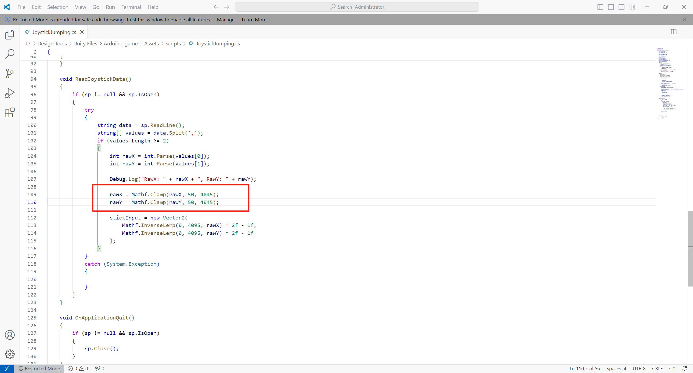
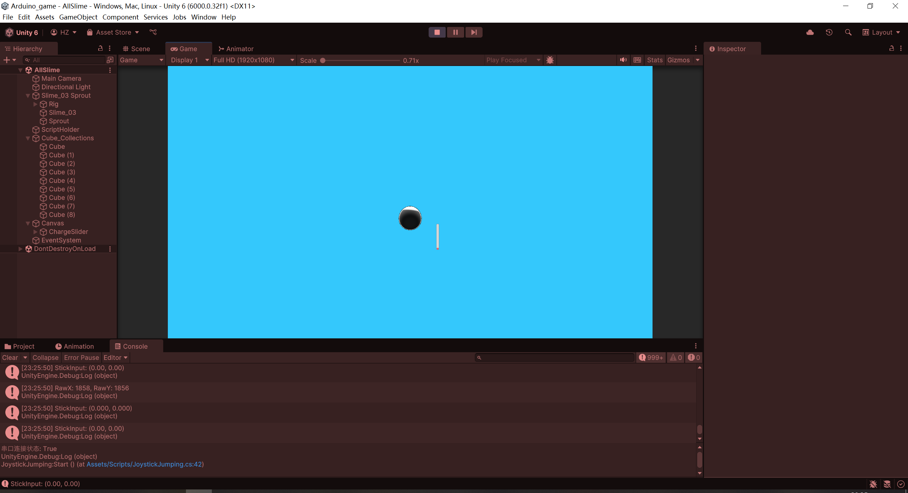

Gameplay: Control the slime’s jump direction using the joystick. The duration of the joystick push determines the charge time — and thus the jump distance. Releasing the joystick causes the slime to jump.
1.After I applied a piece of jump-related code to the model, I found that the “forwardPower” caused it to roll forward several times after landing — and this happened even when the force was reduced.
2. By adding the line “myRb.freezeRotation = true;” I forcibly froze the object's rotation to keep it upright upon landing.
3. Next, I want to add a camera that follows the slime's movement. Although the slime is indeed centered, the camera angle is too downward-facing.
4. So I added a tilt-up multiplier value for the camera and tested it repeatedly until I achieved a suitable viewing angle.
5. Then, I enriched the scene by adding more cubes.
6. Next, by recording the position of the jump-off point, I added a feature where the slime returns to that point after falling a certain distance.
7. Movement of the object is also essential, mainly divided into three types: left-right, up-down, and down-up.
8. The next step was to add a UI element for the charge bar to enhance the jump gameplay experience. However, I encountered some issues — the charge bar would stop at about 3/4 progress instead of fully charging, and sometimes it would even disappear. At first, I thought it was related to the bar's position and range.
9. But later I realized the issue was caused by rotating the slider to make it vertical, which led to some configuration conflicts. In fact, I needed to adjust the slider’s direction using the “Direction” setting instead.
10. Then I modified some settings again. Initially, I tried adjusting elements within the Fill area, but I found that the system would automatically change the settings during play mode. The most straightforward solution was to adjust the “ChargeSlider” value directly and slide the “Value” to get real-time feedback. I was stuck at this step for a long time because I couldn’t understand why the Fill kept auto-adjusting.
11. I tried connecting the joystick this way, but I kept failing to get the correct X and Y data.
12. This was caused by an incorrect wiring setup. After adjusting it, I was able to get the desired X and Y value changes that correspond to the joystick's different directions.
13. The next step was to replace the original spacebar input with the joystick for charging and jumping. The jump direction depends on the joystick’s direction, and the charging time depends on how long the joystick is pushed. When the joystick returns to center, it signals the end of the charge and the slime jumps. However, I ran into an issue — while in most directions I could observe small value changes around zero, in one specific directional range, the value kept staying at -1.
14. So I added value constraints in the code to handle this.
15. The new issue is that even when I return the joystick to center, there are still value changes instead of getting (0, 0). The raw data also isn't (2048, 2048) as expected.
16. So I added a deadzone. However, the next issue was that since my jump is triggered when the joystick returns to center, the slime would jump in place even if the player hadn’t actively used the joystick. My plan is to only allow a jump to be triggered if the player has first pushed the joystick in a direction.
17. But after adjusting the code, the issue still remained: if the joystick data fluctuates slightly, even without actual movement, the magnitude can still be just above the deadZone. As a result, the code mistakenly sets “hasMoved = true”, which then triggers the jump unintentionally.
18. So I added a higher movement threshold to determine whether the joystick has actually been pushed.
19. Now it works.